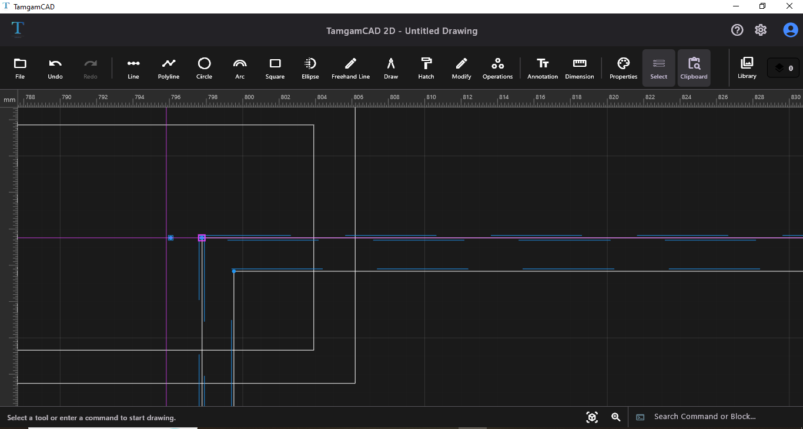
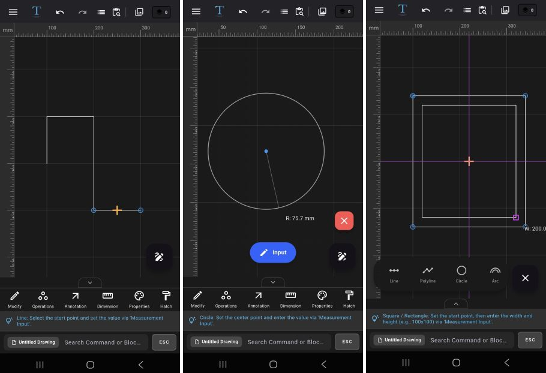
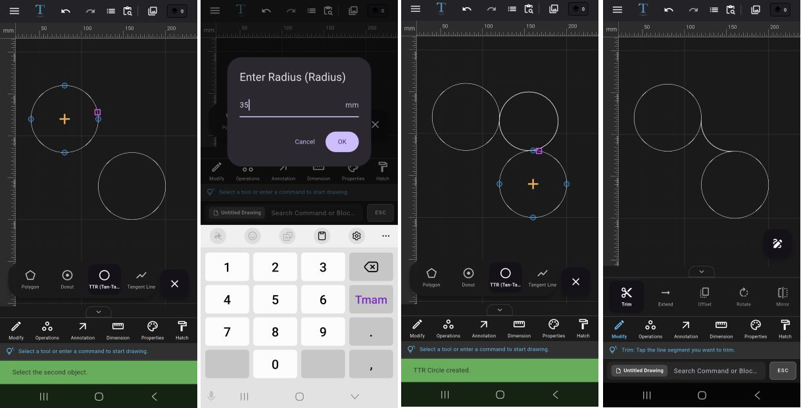
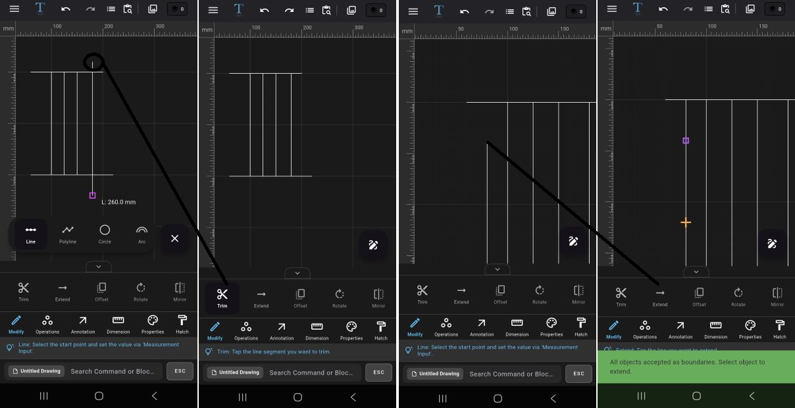
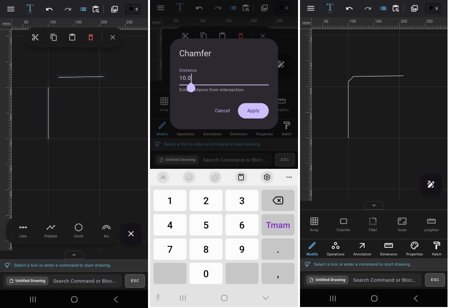
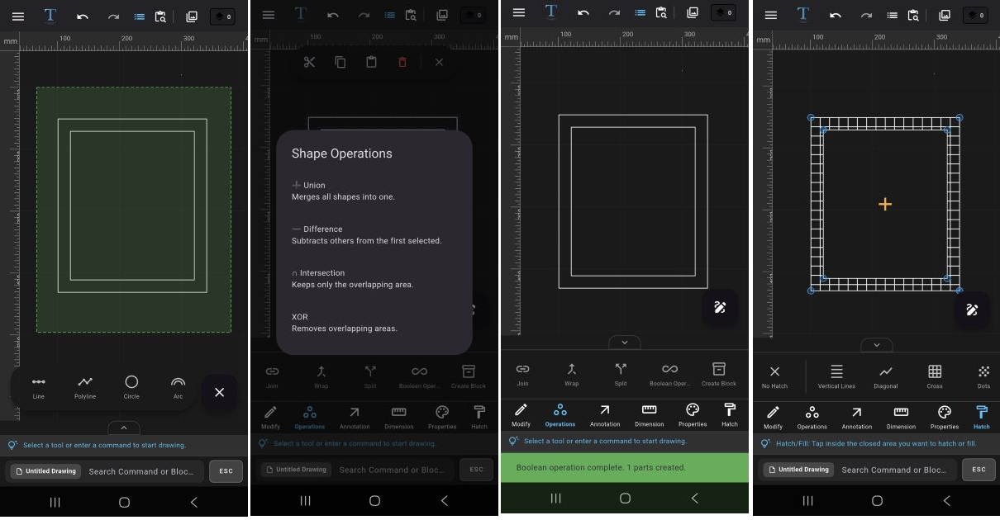

TamgamCAD 2D CAD Tools Learning Center
TamgamCAD is a modern 2D CAD software and technical drawing application developed for mobile devices, tablets, and desktop systems. Optimized for architectural drawings, engineering projects, technical detail plans, and daily CAD needs, TamgamCAD makes the professional drafting experience more accessible with its user-friendly interface, precise drawing tools, and touch screen support.
The application features advanced 2D technical drawing tools such as line, polyline, circle, arc, dimensioning, hatch, layer management, boolean operations, block system, and isometric drawing tools. Additionally, with DXF viewing, DXF import, and export support, you can seamlessly work with other CAD software.
TamgamCAD particularly stands out with its tablet-compatible CAD application structure. Thanks to support for Android tablets, touch screen devices, styluses, external keyboards, and mice, you can create precise technical drawings in a mobile environment. Whether you are in the field or the office; you can quickly work on architectural plans, engineering drawings, mechanical details, and technical projects.
In this learning center, you can find detailed user guides on using drawing tools, modification operations, dimensioning systems, hatch tools, layer management, DXF operations, boolean tools, and mobile CAD usage. Beginners can learn basic technical drawing tools, while professional users can utilize advanced CAD features more efficiently.

🛠️ CAD Interface and Customization Tips
Increase your drafting speed by optimizing the TamgamCAD interface according to your workflow habits through customizable settings that accelerate technical drawing processes. You can access these features from the settings menu. On mobile, the settings section is located in the left slide-out menu.
- Theme Settings: Dark and light theme options provide a more comfortable experience during long drafting sessions.
- Grid System: You can enable or hide the grid in the workspace for alignment and dimension control in technical drawings.
- Isometric Grid: Locks the workspace to 30° and 150° axes, allowing you to draw perfect isometric perspectives.
- Object Snap (Osnap): Create precise CAD drawings using endpoint, midpoint, intersection, and center snap features.
-
Scale Setting: You can use the scale setting tool to edit your drawings in mm, cm, or meter scales.
How to use set scale?
- Select the set scale tool and specify the first point on the screen. Once the point snaps to the grid, specify the second point. In the prompt that appears, enter the real-world equivalent of the length you specified.
-
Dimension Input: Enter precise values directly during drafting using the dimension input system optimized for mobile devices and tablets.
Tip: The dimension input tool appears at the bottom of the screen when drawing tools are active. If the tool panel is open, the dimension input area may not be visible; therefore, close the tool panel first.
- Ortho Mode: Use the F8 shortcut or Ortho mode to restrict line drawing to purely horizontal and vertical axes.
- Magnifier Tool: Provides a zoomed-in technical drawing experience when working with small details. When the magnifier is active, you can get a detailed view by dragging your finger across the screen.
📁 Opening DXF on Mobile and Project Management
The tools located in the file operations section allow you to manage your projects and export them in various formats.
- DXF Import/Export: Open DXF files compatible with other CAD software on your phone, or save your projects as DXF.
- Exporting: Export your drawings in .SVG and .PDF formats for vector presentations and high-resolution prints, and in .PNG format for quick sharing.
- Tracing over Image: Import technical drawing images in JPG or PNG formats as underlays and trace over them.
- Save/Save As (JSON): Backup your projects in .json format along with all layer data.
- Open File: Reopen previously saved TamgamCAD project files to continue editing.
✏️ How to Create 2D Technical Drawings?
TamgamCAD offers a professional drawing experience across different devices thanks to touch screen, stylus, mouse, and keyboard support. Explore all drawing tools, from basic geometry to complex forms.
- Line and Polyline: Specify the start point, then specify the end point to complete the drawing. For dimensioned drawing, specify the first point, move the cursor in the desired direction to set the path, then enter the dimension; the drawing is generated at that length the moment you confirm. Double-click at the last point for continuous lines.
- Circle: First specify the center point, move away from the center to achieve the desired size, and complete the drawing with the second point. For dimensioned drawing, specify the center point and then enter the radius value to create your circle.
- Arc: First specify the start point, and without releasing your finger/mouse, drag to determine the chord length. The moment you release your finger/mouse, the chord is formed; then determine the bulge height with a second click.
- Rectangle: First specify the initial point, then click a second point to determine the width and height, or create a freehand drawing via drag-and-drop. For precise input, enter the exact dimensions from the keyboard in Width X Height (or Width * Height) format, or use the dimension input.
- Ellipse: Create freehand ellipses by defining the axis widths using the drag-and-drop method.
- Polygon: First specify the number of sides, then set the center on the screen and finish the drawing when it reaches the desired size.
- Donut: First specify the center point, then sequentially enter the radii of the inner circle and the outer circle to create a thick-walled ring.
- Tan-Tan-Radius (TTR): Use this to draw a circle that is tangent to two different objects and has a specified radius value. For TTR, click on the first object, then the second object, and enter a radius value in the prompt window. The radius value you enter must be geometrically appropriate for the distance between the two objects. You can trim the circles generated by TTR later using the Trim command to achieve smooth corner transitions.
- Tangent Line: Use this to draw straight lines perfectly tangent to the outer surfaces of two different circles.
- Freehand: Create organic drawings with a stylus or touch screen using the vector-based freehand drawing tool. Due to its underlying mathematical structure, freehand lines can be used in conjunction with modification tools.


⚙️ Trim, Offset, and Project Modification Guide
Modify your existing drawings to add professional details.
-
Trim & Extend:

How to Use Trim?
1. Select the Trim tool from the tool menu.
2. Tap on the area you want to trim.
3. The system will automatically remove the excess part based on the intersection point.
Example: Used to clean up overhanging parts of wall lines or modify intersecting lines.
How to Use Extend?
1. Select the Extend tool from the tool panel.
2. Tap the reference line you want the target line to reach.
3. The line is automatically extended to the target object.
Tip: For Trim and Extend operations to work, objects must intersect or be aligned in the same path. -
Offset:
1. Select the object you want to create a parallel copy of.
2. Select the Offset tool from the tool panel.
3. Enter the distance value in the prompt window.
4. Use +/- values to determine the inward or outward direction.
Example: Used to create wall thickness in architectural plans or produce parallel technical lines. -
Rotate:
1. Select the object you want to rotate.
2. Select the Rotate tool from the tool panel.
3. Enter the rotation angle in the prompt window.
4. The operation will be applied automatically.
Example: Used to align technical parts at specific angles or rotate layout plans. -
Mirror:
1. Select the objects you want to mirror.
2. Select the Mirror tool from the tool panel.
3. Specify the start point of the symmetry axis.
4. Then select the end point.
5. The system will create a symmetrical copy of the selected object.
Example: Provides fast duplication for symmetrical furniture, mechanical parts, or plan drawings.Tip: Activate Ortho mode for precise symmetry. -
Array:
Rectangular Array:
1. Select the object to be arrayed.
2. Open the Array tool from the tool panel.
3. Choose the rectangular array option from the prompt window.
3. Enter the number of rows and columns.
4. Set the distance between objects.
5. The system will perform the array automatically.
Polar Array:
1. Select the object to be arrayed.
2. Open the Array tool from the tool panel.
3. Choose the polar array option from the prompt window.
4. Specify the center point.
5. Enter the number of copies.
6. Set the angle of rotation.
7. Objects will be placed in a circular pattern.
Example: Used for column layouts, screw holes, or repeating technical details.Tip: Make sure the "Rotate Items" option is unchecked if you want the items to maintain their original orientation during full rotation. -
Chamfer & Fillet:

Chamfer:
1. First select the two straight lines to be chamfered.
1. Select the Chamfer tool from the tool panel.
3. Enter the chamfer distance.
4. The corner will be modified as a flat cut.
Fillet:
1. First select the two straight lines to be rounded.
2. Select the Fillet tool from the tool panel.
3. Enter the fillet radius.
4. The system will automatically create an arc.
Example: Used to soften sharp corners or create technical transitions. -
Scale:
1. Select the object to be scaled.
2. Select the Scale tool from the tool panel.
3. Enter the scale factor in the prompt screen.
4. The object will be proportionally enlarged or reduced.
Example: Ideal for reusing technical details at a different scale. -
Lengthen:
1. Select the line you want to extend or shorten.
2. Select the Lengthen tool from the tool panel.
3. Enter the new length value.
4. The system will update the line automatically.
Example: Provides quick modification when a dimension change is needed in a technical drawing.
🧩 Grouping, Exploding, and Boolean Operations
Design complex parts by merging closed areas or subtracting them from each other.
-
Group & Ungroup:
How to Use Group?
1. Select the objects you want to move together.
2. Execute the Group command from the tool panel.
3. All selected objects will now act as a single unit.
Example: Can be used to move or duplicate door, window, and wall details together.
How to Use Ungroup?
1. Select the previously created group.
2. Execute the Ungroup command.
3. All objects within the group become independent again.
Tip: The group operation does not physically merge the objects. It only makes them easier to select and move together. -
Explode & Join:
How to Use Explode?
1. Select the polyline, polygon, or unified object.
2. Select the Explode tool from the operations section.
3. The system will break down the object into independent lines or sub-components.
Example: Used when you want to modify a single segment within a polyline.
How to Use Join?
1. Select the lines you want to join.
2. Ensure the endpoints of the lines touch each other.
3. Select the Join tool from the operations section.
4. The system will convert the lines into a single continuous object.
Example: You can turn open lines into a closed polyline to make them suitable for hatch or boolean operations. -
Wrap (Boundary):
1. Select overlapping or intricately nested objects.
2. Select the Wrap tool from the operations section.
3. The system will analyze internal details and generate only the outer contour.
4. The resulting object is created as a closed perimeter geometry.
Example: Used to quickly extract the outer boundary of complex plans composed of multiple shapes.
Tip: Wrap operations are particularly useful for creating clean geometry for hatching, area calculation, and DXF exporting. -
Boolean Operations:

Boolean tools only work on closed geometries. You can perform mathematical geometry operations between circles, closed polylines, and unified shapes. -
Union:
1. Select the closed shapes to be merged.
2. Select the Boolean Operations tool from the operations section and choose Union in the prompt window.
3. Overlapping areas are fused into a single unified shape.
Example: Can be used to turn architectural areas consisting of multiple rooms into a single closed plan. -
Difference:
1. Select the main shape.
2. Define the second shape to be subtracted.
3. Select the Boolean Operations tool from the operations section and choose Difference in the prompt window.
4. The area covered by the second shape is cut and subtracted from the main geometry.
Example: Can be used to drill a hole in a plate or create a window opening. -
Intersection:
1. Select intersecting closed objects.
2. Select the Boolean Operations tool from the operations section and choose Intersection in the prompt window.
3. The system will retain only the common intersecting area.
Example: Can be used to calculate or analyze the common usage area of two different spaces. -
Exclusion (XOR):
1. Select shapes that touch or overlap each other.
2. Select the Boolean Operations tool from the operations section and choose XOR in the prompt window.
3. The common intersecting area is deleted, and only the differing regions are retained.
Example: Can be used to clean up overlapping technical areas or separate complex geometries.
Tip: The XOR operation is frequently used in technical drawings to create clean and isolated geometry by removing overlapping areas.
📐 Technical Drawing Dimensioning and Hatching
Add technical depth and material information to your projects.
-
Dimensioning:
You can use linear, angular, diameter, and radius tools to annotate your technical drawings according to standards.
How to Add Linear Dimensions?
1. Open the Dimension tool from the tool panel, then select the Linear dimension.
2. Select the start point of the line or area to be dimensioned.
3. Then define the end point.
4. The system will automatically generate the dimension value.
How to Add Angular Dimensions?
1. Select the Dimension tool from the tool panel, then choose the Angular dimension.
2. To measure an angle, for example at point A of a triangle, select point B first and then point C.
3. The system will automatically calculate the angle value.
Diameter and Radius Dimensions:
1. Select the Dimension tool from the tool panel, then choose either Diameter or Radius dimension.
2. Select the circle or arc object to be dimensioned.
3. The diameter or radius value is generated automatically.
Tip: You can later manually edit the contents via the Text Edit tool, and change architectural tick and arrowhead styles.Tip: To add coordinates, you can use the Coordinate option from the dimensioning tool. The coordinate dimension is ideal for displaying the X and Y coordinates of a designated point on the technical drawing. -
Automatic Area Calculation:
1. Select a closed geometry.
2. Open the Area Calculation tool from the dimensioning tools.
3. The system will automatically calculate the area of the selected geometry.
Example: Can be used for room square footage, enclosed technical spaces, or surface calculations.
Tip: For the area calculation to work correctly, the selected geometry must be completely closed. -
Hatch Library:
Hatch tools allow you to fill the interiors of closed areas with patterns suitable for technical drawing standards.
How to Use Hatch?
1. Open the Hatch tool.
2. Choose the pattern you want to use.
3. Select the closed area where the hatch will be applied.
4. The hatch process will be applied automatically.
Tip: You can make your technical drawings more readable and professional by adjusting the fill color and hatch line colors separately.Supported Hatch Patterns:
• Solid Fill
• Vertical Lines
• Diagonal
• Crosshatch
• Dotted Pattern
• Brick
• Checker
• Honeycomb
• Concrete Pattern
Example: Can be used for reinforced concrete areas, wall cross-sections, material representations, or technical section drawings.Tip: When you remove the fill color, the line color becomes transparent; make sure to pick a new line color from the color palette before continuing to draw. -
Text and Leader:
You can use text and leader (arrow-text) tools to add annotations, point out details, and label objects in technical drawings.
Adding Plain Text:
1. Select the Text tool.
2. Specify the point where the text will be placed.
3. Enter the text content from the keyboard.
4. Double-click on the text to edit its size, font, color, and content.
Tip: You can easily insert frequently used symbols in technical drawings (like Ø, ±, °, ⌀) from your keyboard in the text editing screen.
How to Use Leader (Guide Line)?
1. Open the Leader tool.
2. Select the point to be indicated.
3. Determine the arrow direction.
4. Enter the annotation text.
5. The system will create the arrowed annotation line.
Example: Can be used to add technical detail notes, part names, or production remarks.Tip: You can double-click on the leader text later to open the text editor and modify its content.
-
Table and Settings:
You can add technical tables, bill of materials, or properties tables to the workspace.
Creating a Table:
1. Select the Table tool from the annotation section.
2. Select the area where you want to place the table.
3. Set the number of rows and columns.
4. Once the table is added to the screen, double-click a cell to input data.
5. Edit table properties via Table Settings.
Example: Can be used to create door-window schedules, material tables, or technical specification sections.
🎯 Professional Layer and Block Management
Manage complex projects by splitting them into layers and gain speed with blocks.
-
Layers Panel:
The layer system allows you to organize and manage objects neatly in large technical drawings. You can categorize drawings, control visibility, and prevent accidental modifications.
Creating a New Layer:
1. Open the Layers panel from the top menu.
2. Tap the + icon to create a new layer.
3. Open layer properties via the three dots on the right.
4. Define the layer name and color.
Layer Visibility:
• You can temporarily remove a layer from the workspace by hiding it.
• You can make it visible again to resume working.
Locking a Layer:
• Objects on a locked layer cannot be selected or modified.
• Especially useful for protecting reference drawings.
Example: In architectural projects, walls, dimensions, furniture, and electrical layouts can be kept on separate layers.
Tip: Naming layers systematically significantly increases workflow speed in complex projects. -
Object Properties:
You can quickly modify the visual attributes of selected objects from the properties panel.
Modifiable Properties:
• Line Color
• Linetype (Continuous, Dashed, Dotted, etc.)
• Lineweight
How to Use?
1. Select the object you want to edit.
2. Open the Properties panel.
3. Change the color, linetype, or lineweight values.
4. The selected object will be updated instantly.
Example: Can be used in technical drawing to convert solid lines into dashed lines or highlight important details with different colors. -
Match Properties:
The Match Properties tool allows you to rapidly transfer the visual attributes of one object to others.
How to Use?
1. Open the Match Properties tool.
2. Select the source object whose properties will be copied.
3. Then tap the target object to apply the properties.
4. The system will automatically transfer the color, linetype, and lineweight.
Example: Instead of manually changing all line styles in large projects, you can establish a standard visual appearance with a single click.
Tip: The match properties tool accelerates the creation of visual standards in technical drawings. -
Block Creation:
By converting frequently used drawings into blocks, you can reuse the same object without having to redraw it constantly.
How to Create a Block?
1. Select the objects to be converted into a block.
2. Select the Create Block tool from the operations panel.
3. Specify a name for the block.
4. Choose the block destination.
* Project Library is used for the current drawing file you are working on, while Global Library is used for different drawing files.
5. The system will convert the objects into a single block unit.
Example: Ideal for doors, windows, furniture, or technical symbols.
Editing Blocks:
• You can double-click a block to edit it or select the relevant field from the library panel.
- Use Default Properties for instant and custom edits, or Edit Content to modify all instances of the block across the entire project at once.
-
Using from Library:
1. Open the Library panel.
2. Select the block to be used.
3. The block will be placed in the workspace.
Example: You can reuse standard technical symbols or frequently used architectural details across all projects.
Tip: Utilizing the Global Library saves a significant amount of time, especially in large projects.
🛠️ CAD Troubleshooting and Tips
Why Isn't Trim Working?
Ensure that the lines physically intersect with each other. For non-intersecting objects, use the Extend tool.
Why Isn't Hatch Applying?
The area must be completely closed to apply a hatch. If there is even a tiny gap, the system will throw an "Open Loop" error.
❓ Frequently Asked Questions
Can I open other DXF files with TamgamCAD?
Yes, TamgamCAD fully supports the industrial DXF format. You can both import and export your projects.
Does TamgamCAD work offline (without internet)?
Yes, TamgamCAD is optimized to run entirely on your device. You can draft and save without an internet connection.
Is there stylus support on Android tablets?
Yes, it works compatibly with pen pressure and sensitivity, allowing you to create more detailed technical drawings.
Start 2D Technical Drawing Now
Download TamgamCAD for a professional CAD experience on mobile and tablet.